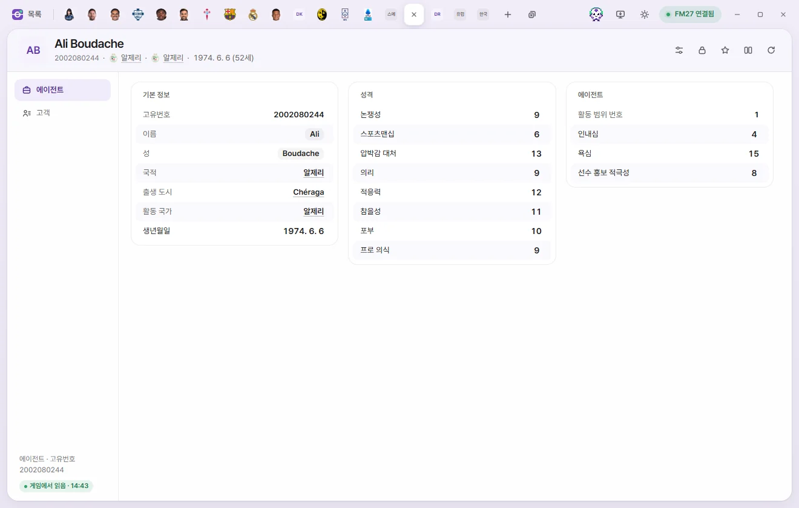
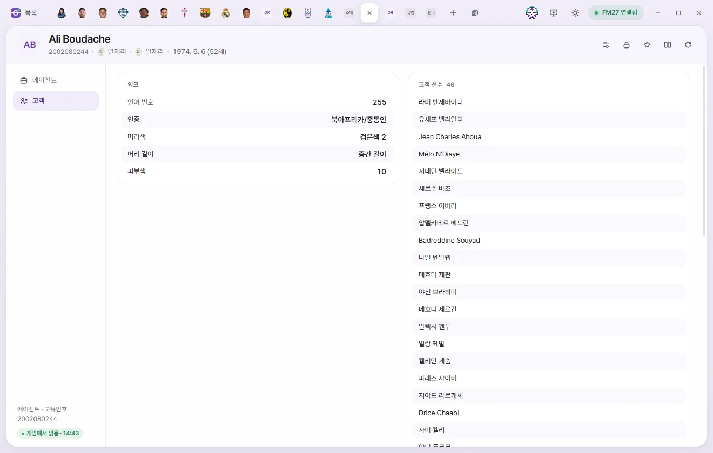
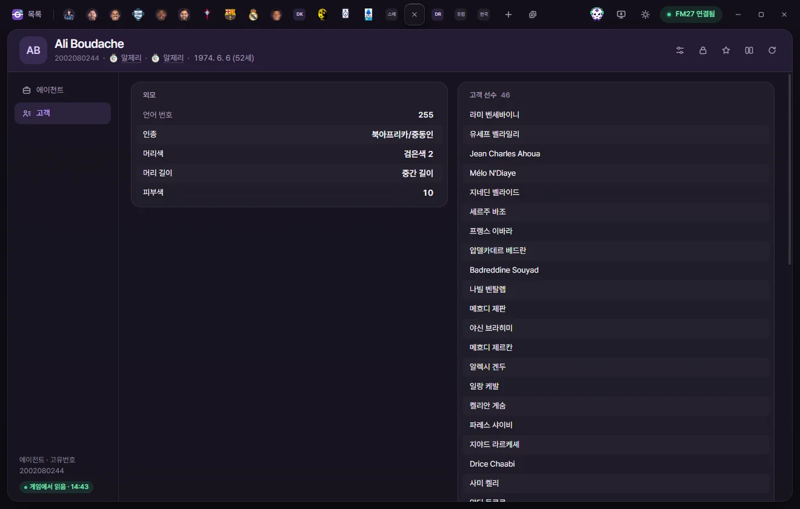
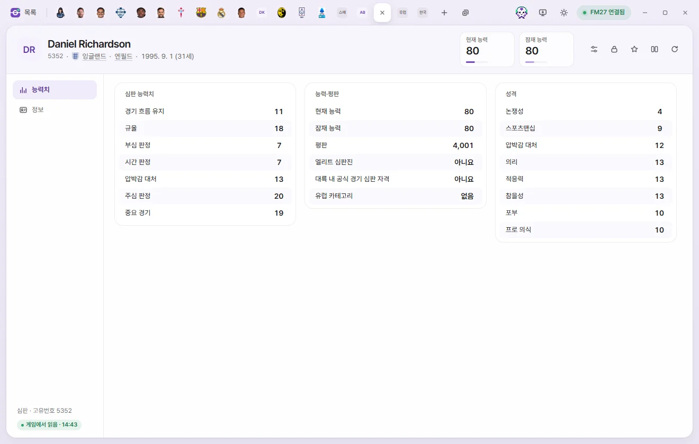

편집 탭
에이전트·심판
에이전트의 성격과 협상 성향, 고객 선수를 보고 고치는 방법과, 심판의 능력치·평판·심판 자격·외모를 고치는 방법입니다.
에이전트 탭과 심판 탭은 목록에서 이름을 눌러 엽니다. 값 고치기와 저장은 선수 탭과 같습니다. 선수 페이지의 공통 설명
두 탭 모두 머리 오른쪽 단추는 프리셋, 고정, 즐겨찾기, 비교, 게임에서 다시 읽기입니다. ⚡ 단추는 없습니다. 선수 탭 머리
에이전트


탭 머리
이름 아래에 고유번호, 국적, 활동 국가, 생년월일(나이)이 보입니다. 숫자 카드는 없습니다. 에이전트 목록에서는 '고객 수' 열로 정렬할 수 있습니다.
하위 페이지는 에이전트와 고객 2개입니다.
에이전트 페이지
| 묶음 | 칸 | 하는 일 | 고칠 수 있는 범위 |
|---|---|---|---|
| 기본 정보 | 고유번호 | 보기만 | |
| 기본 정보 | 이름, 성 | 눌러서 글자를 고칩니다. 비울 수 없습니다 | 60자까지 |
| 기본 정보 | 국적, 출생 도시, 활동 국가 | 누르면 그 탭이 열립니다 | 보기만 |
| 기본 정보 | 생년월일 | 날짜 | |
| 에이전트 | 활동 범위 번호 | 보기만 | |
| 에이전트 | 인내심, 욕심 | 1~20 | |
| 에이전트 | 선수 홍보 적극성 | 고객 선수를 구단들에 적극적으로 소개하는 정도로 보입니다 | 1~20 |
| 성격 | 논쟁성, 스포츠맨십, 압박감 대처, 의리, 적응력, 참을성, 포부, 프로 의식 | 1~20 |
이름을 처음 고쳐 저장할 때 세이브를 백업했는지 한 번 묻습니다.
고객 페이지



- 고객 선수: 이 에이전트의 고객 선수 이름 목록입니다. 누르면 선수 탭이 열립니다. 고객을 더하거나 빼는 기능은 없습니다.
- 외모: 언어 번호(보기만), 인종, 머리색, 머리 길이, 피부색(0~20)입니다. 선택지는 선수 외모와 같습니다.
심판


탭 머리
- 이름 아래에 고유번호, 국적, 거주 도시, 생년월일(나이)이 보입니다.
- 숫자 카드는 현재 능력과 잠재 능력(각 1~200)입니다. 눌러서 바로 숫자를 칩니다.
하위 페이지는 능력치와 정보 2개입니다.
능력치 페이지
| 묶음 | 칸 | 하는 일 | 고칠 수 있는 범위 |
|---|---|---|---|
| 심판 능력치 | 경기 흐름 유지, 규율, 부심 판정, 시간 판정, 압박감 대처, 주심 판정, 중요 경기 | 1~20 | |
| 능력·평판 | 현재 능력, 잠재 능력 | 1~200 | |
| 능력·평판 | 평판 | 0~10000 | |
| 능력·평판 | 엘리트 심판진, 대륙 내 공식 경기 심판 자격 | 두 값은 대부분 함께 켜져 있습니다. 한국 심판 5명은 대륙 쪽만 켜져 있습니다 | 예, 아니요 |
| 능력·평판 | 유럽 카테고리 | 유럽 엘리트 그룹, 유럽 엘리트 육성 그룹, 유럽 1차·2차·3차 그룹, 없음, 정하지 않음. 번호가 커질수록 평균 능력이 낮습니다. 아시아·남미 심판에게도 같은 번호가 쓰입니다 | 선택지 |
| 성격 | 논쟁성, 스포츠맨십, 압박감 대처, 의리, 적응력, 참을성, 포부, 프로 의식 | 1~20 |
정보 페이지

| 묶음 | 칸 | 하는 일 | 고칠 수 있는 범위 |
|---|---|---|---|
| 기본 정보 | 고유번호, 성별 | 보기만 | |
| 기본 정보 | 이름, 성, 통칭 | 눌러서 글자를 고칩니다. 이름과 성은 비울 수 없습니다 | 60자까지 |
| 기본 정보 | 국적, 출생 도시, 거주 도시 | 누르면 그 탭이 열립니다 | 보기만 |
| 기본 정보 | 생년월일 | 날짜 | |
| 외모 | 언어 번호 | 보기만 | |
| 외모 | 인종, 머리색, 머리 길이, 피부색 | 선택지는 선수와 같습니다 | 선택지, 피부색 0~20 |
맡는 대회 목록에는 이 심판이 맡는 대회 이름이 보입니다. 대회 목록을 아직 읽지 않았으면 먼저 읽어 옵니다. 누르면 대회 탭이 열립니다. 대회를 더하거나 빼는 기능은 없습니다.